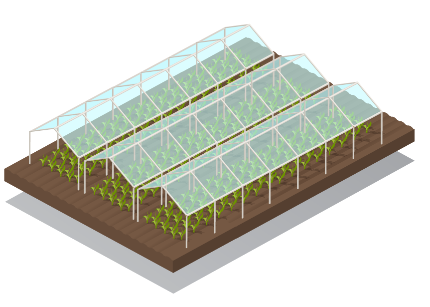

El invernadero inteligente con plásticos retráctiles
Monitoriza y controla tu invernadero desde el móvil. Abre y cierra los plásticos de forma automática según las condiciones climáticas.
El invernadero inteligente con plásticos retráctiles
Monitoriza y controla tu invernadero desde el móvil. Abre y cierra los plásticos de forma automática según las condiciones climáticas.
WALIA es un sistema de invernadero diseñado para todo tipo de cultivos. Sus plásticos agrícolas se abren y cierran de forma automática o manual mediante una aplicación móvil, adaptándose a las condiciones climáticas en tiempo real.
Temperatura, humedad y precipitaciones en tiempo real.
Abre y cierra los plásticos desde tu teléfono, estés donde estés.
Respuesta automática a cambios en las condiciones meteorológicas.

La aplicación WALIA te permite monitorizar en tiempo real los datos de tu invernadero y controlar el estado de los plásticos retráctiles desde cualquier lugar.
WALIA protege y optimiza la producción de los principales cultivos.
Descubre WALIA en persona. Solicita tu cita y te mostramos cómo funciona el invernadero inteligente.
Solicitar citaEscríbenos y te informamos sin compromiso sobre WALIA y cómo puede ayudarte en tu explotación.